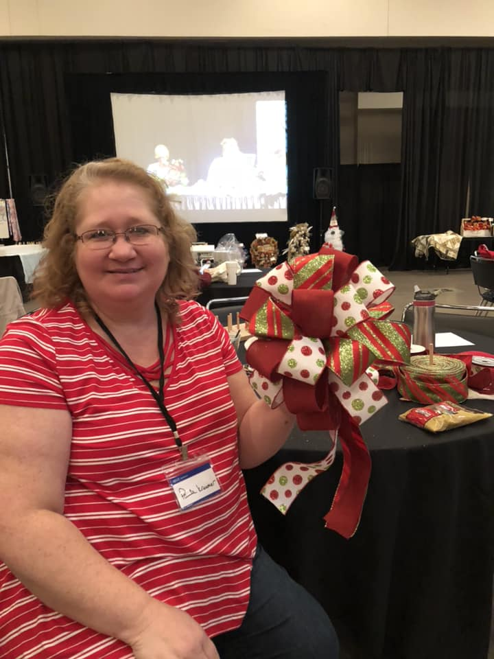

-

Paula Smith has been an artist her entire life. Hailing from Kansas City, she got her start in high school, where the art teacher noticed her skills. The teacher worked closely with her to hone her artistic talent. Most of her life, Paula primarily expressed herself in drawings and paintings. As a teenager, her mother allowed her to paint a large unicorn mural on her bedroom wall!
Paula made her first wreath in 2015, as a way to help pass the time after retiring. She quickly realized that she had a knack for wreaths, and turned her attention towards selling her work. "All artists dream of making a living with their craft. I have been very fortunate.", Paula says. She has started working on home decor beyond wreaths. Please revisit to see new merchandise soon!
Check out Paula's amazing portfolio!
Contact Crafting About